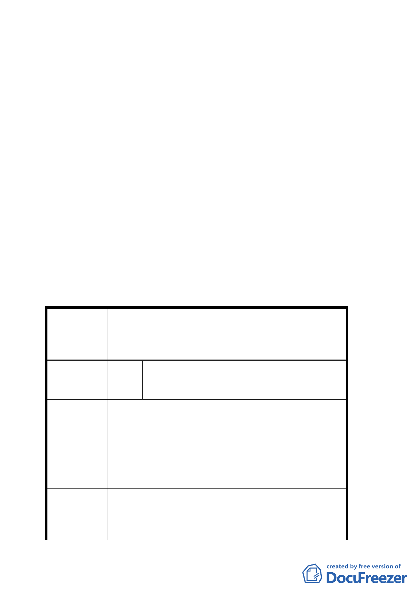

林區永公路 245 巷 34 弄 151 號）。
七、 公民或團體所提意見：共計 1 件。
決議：
一、 本案原則通過，惟考量本計畫案內之開發行為與提案單位
尚未履行其所提環境影響評估分析、水土保持計畫、交通
影響評估衝擊等承諾條件，請提案單位會後與市府環保
局、建設局、交通局、發展局、土地開發總隊等單位針對
該等未解決部分予以釐清，於下次會議提出說明。另本案
之都市設計管制規範規定，請發展局於下次會議一併說
明。
二、 其餘依地政處與申請單位台北市住六-六自辦市地重劃區
重劃會所提內容暨簡報資料對照表修正辦理。
三、 有關公民或團體陳情意見決議情形詳如綜理表。
臺北市都市計畫委員會公民或團體所提意見綜理表
變更臺北市住六-六地區細部計畫案內第一種住
案
名
宅區為道路用地及人行步道用地、人行步道用地
為綠地、人行步道用地為道路用地、道路用地及
第一種住宅區為綠地計畫案
臺北市士林區公館里辦公處
編 號 １ 陳情人 (請協助轉知連署人莊忠明等
200 人)
1.對下列意見未有共識前，敬請暫時收回 95 年
11 月 22 日於市府及士林區公所公開展覽圖說
之成命。
陳 情 理 由 2.貴計畫對於油、污、雨水如何排放？排入何
處？是否會嚴重造成下游居民心生畏懼、生
命恐慌？與財產損失？生態保護及環境衝擊
產生影響？
1.仰德大道尖峰時間之交通衝擊，對整個大陽
建議辦法
明山唯一出入大道（仰德大道）擁塞問題幾
十年來政府束手無策，山區車輛的增加不是
靠通行證及管制人員可解決，解決之道唯有
三